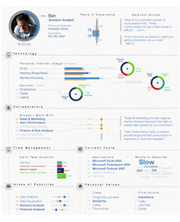

說到用戶體驗（User Experience, UX），有些人可能聽過，但大家或許還是一知半解，又或是聽也沒聽過。
就如上兩篇文章所說，在我來看，UX是跟據了Design Thinking的理念，從工種上制定出一套可於企業運作上實踐應用的一套框架流程。那，UX的具體工作是怎樣的，跟傳統設計師的工作又有什麼不一樣？或許，今天嘗試寫一個普及帖吧，詳細說說UX具體方面的種種。
而在這個需要迅速應變的年代，大家或許可參考下，借鏡一下一些比較前進創新的行業做法，將UX應用實踐在您的企業部門內，開發真正以用戶為本的商品和服務吧~
從根本出發
一直以來，企業的運作都更多於從自身的角度，或從功能角度出發為主導去提供解決的方案。這其實沒什麼問題，但很容易忽略了一個很重要的原素：那就是市場競爭的本質。
其實，解決問題，永遠都不只一個辦法。您提供了一個滿足市場的答案，不代表用戶覺得是最好的方案。在競爭的大環境裹，企業要做的，不只是要找出方案，更在於找出一個比任何人都要好的方案。
企業要做的，不只是要找出方案，更在於找出一個比任何人都要好的方案
那，怎樣才算得上好的方案？很簡單，用戶在比較下最願意用的方案，就是最好的方案。因此，UX的工作，其實重點不在於頁面流程怎樣設計之類的實踐問題，但當然這是UX須要執行時的職務，而更重要的，是為團隊帶來設計的思維，通過對用戶的理解，讓團隊重新探索對問題更合適的解決方法。
關於設計思維，可參考我寫的兩篇文章《程序猿vs設計獅》和《用户＞产品的核心思路和魔法》
由角色開始
去幫助團隊去深入探索一個問題，再尋找出一個更好的解決方案。我們可把整個工序看大概可分為以下的若干環節：
{kind=link}
將一個意念轉化成可實踐的方案，具體來說，就像拍電影又或調查案件一樣，我們會先從理解嫌疑犯/角色設定著手，創建出一個個不同的人物設定及檔案，我們稱之為Persona。
有別於以往我們以一些外在客觀條件如收入，職業，年齡等外在條件去劃分我們不同的客戶群。我們會創造一個個有血有肉的代表人物，付上他的名字，背景、生活狀況和態度思想等等，並盡量以圖像顯示的形式豐富人物的內容。
 |  |
{kind=link}
為什麼這樣做？
- 將分析資料可視化
把數據資料通過視像化和直觀的表達形式，有助我們對目標用戶產生共嗚和同理心（empathy），並能對需求有更深層次的理解。 - 創建一套簡單的溝通語言
把模糊抽象的概念具體化，我們通過共同重新定義出Persona這一套簡單易明的語言，減少理解上的不一致，幫助團隊有效溝通及討論 - 理解背後動機和想法
理解一個行為決定，其實更多在於分析其背後的動機，往往受到背後成長和生活背景所形成的世界觀所影響，而不在於收入、職業、居住城市等表象因素。換句話說，以往的客戶群概念沒法讓我們深入理解用戶的潛在想法。 - 量化比較
其實比較好的Persona做法，會嘗試設計不同的維度並跟據每個不同用戶進行量化，如用戶對科技產品的熟悉情度、購買力等等，那團隊就更能容易從程度方面比較不同角色。
怎樣得出這些結論？
首先，在開始任何調研之前，我認為大前提在於，得先對所要處理的問題更慎重的思考和定義，可參考一點上篇文章我說的觀點吧。
然後，在調研方面，主要可通過以下三個方向的綜合應用，也視乎可投入的成本和時間：
- 過往數據
跟據以往的用戶數據進行分析，也就是現在大數據的背後理念 - 接觸用戶
與用戶進行接觸，通過問卷，面對面的輕鬆訪談，或以日記形式記錄典型用戶的日常生活狀況，從而多維度全面的去嘗試了解用戶的種種種 - 市場研究
透過goolge及其他途徑搜集資料，透過對市場的理解和經驗嘗試歸納出幾個典型的人物模型
場景為先的真實體驗
那，各個角色都齊備好了…那，下一步我們該怎麼做？
就像是拍電影一樣，我們需要一個場景，一個故事，一個用戶和你的產品或服務相遇的故事…
在構思整個場景的時候，整個團隊就能參與，並可以根據角色的心路歷程，親身去體會整個經歷，去查找討論犯駁或不合情理之處。而所完成的那個場景，我們會稱之為用戶經歷旅程（Customer Journey Map）。以下是一些範例：
{kind=link}
{kind=link}
用戶經歷旅程其實都有不同的風格，但整體來說在說明整個場景的時候，通常會注意以下三個指標：
- 心情
量化當事人那刻的心情，通常會由開心至憤怒分為5個狀態 - 工具/媒介
要是當事人需要通過不同的方法，如電郵、電話等去完成某件事情，我們都會記錄下來。 - 所需時間
要完成一件事情需要時間去等待，我們都會把等待狀態指示出來
在構思整個過程仔細反覆考量後，我們得出的這個用戶的經歷旅程，就能比較清晰的關注到他的痛點（Painpoint）。例如：
- 當用戶憤怒或不滿的時候，我們能夠提昇他的體驗麼？
- 過頻繁的利用不同工具/媒介，我們可注意到並考慮是否有更直接和簡單的辦法。越多的需要運用各類工具和媒介，對用戶來說體驗越是糟糕。
- 等待總是無聊的，除了可反思能不能革新整個流程外，在此時提供額外的幫助，或有效的縮短等待的時間，都是很好的切入點。
關鍵時刻的來臨
其實做了那麼多的東西，最重要的，就是想找到那個關鍵時刻（Moment of Truth, MOT）：那就是你的產品和服務，和用戶真正的切入點。
從用戶體驗的角度而言，我們要做到的，是讓我們理解不同的場景故事，和當中用戶是怎樣能跟我們的產品和服務交接的；又或是去主動找出跟用戶的交接的。
而去實現這些交接點的出現，也就我們一直所知的marketing了。
迅速驗証
但說到底，這一切，都只是假設而已。所以，具體思路是通過盡快做出樣版（Prototype），通過反覆的驗証和反思，找出改進產品和服務的下一步方向，並一直循環下去。
{kind=link}
{kind=link}
其實，用這種方法，您或許會問，這可以分散出無數的Persona和相關的多個經歷旅程（CJM），而甚至在每個CJM內也有多個關鍵時刻（MOT），無限伸延…那…我們該怎麼樣？
又不得不回到很早之前我寫的一篇文章了，工作是永遠做不完的（要不您我早就失業了吧？:-p），原則在於把事情優先化（Prioritize），把抽象資料可視化（visualize）和可量化（quantify），回看一下，是否發現，UX的工作其實也是圍繞著這三個原則建立的？ :p
| ＜上一篇 | 下一篇＞ |